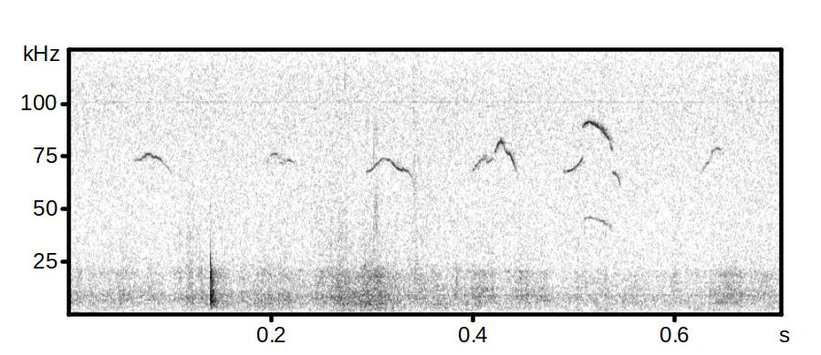

I am studying social context and the modulatory effects of serotonin on auditory processing in mice. In this project, we are interested in how internal state (in this case, a period of social isolation after weaning) affects the activity of neurons in the IC, a region of the auditory system that integrates sensory information and receives seroternergic innervation from the dorsal rafae nucleus, in response to courtship calls (pictured below). Contribution: I assessed the density of c-fos immunoreactive neurons (a widely accepted marker of neuronal activation) in the IC after pharmacologically manipulating serotonin systemically in mice that had experienced either chronic social isolation or had been socially housed. This project was my first go at planning and running an experiment. While it was designed and assigned to me by my supervisor, I had the autonomy to plan, execute, and clollect/alyze data. I learned a lot about the logistical details that go into planning an experiment and gained experience with the process of writing up technicial detials, creating figures, and submitting for publication. Postweaning Isolation Alters the Responses of Auditory Neurons to Serotonergic Modulation. Integrative and Comparative Biology(2021) Davis SED, Sansone JM, and Hurley LM https://doi.org/10.1093/icb/icab051 
Prior to this, I worked in a translational physiology lab that uses ossabaw pigs as a model organism to study coronary artery disease and diabeties due to their thrifty genotype. When fed a high fat-high sugar diet, the lab was able to investigate the development of metabolic syndrome and calcium signaling anomalies within smooth coronary muscle cells associated with the development of ahtrosclerosis. As a laboratoy technician in the Sturek lab, I assisted with procedures and surgeries including cath labs, stent placement, and blood glucose tests. In terms of in vitro work, I analyzed tissues, cell cultures, and organ cultures using microscopy and calcium imaging. Supervisors: Dr. Michael Sturek, Dr. Mouhamad Alloosh, and Jim Byrd
My first research experience was my master's thesis titled, In Vitro Biocompatibility of HTCC Thick-Film Electrodes for Use in Neural Implantable Devices. This was a small part of a larger study with the ultimate goal of creating a hermetically sealed package for electrodes to be implanted onto peripherial nerves. In this project, I built ceramic high temperature co-fired (HTTCC) thick-film micro-electrodes and used Immunofluorescence microscopy and cell culture techniques to look at the survivability of a neuronal-like PC-12 cell line, a schwann cell line, and rat dorsal root glial cells on these electrodes under passive conditions and under electrical stimulation. The findings were presented at the 10th World Biomaterials Congress in 2016 by Dr. Henry Lancashire. To read more about this, check out the abstract for the event. Advisors: Dr. Anne Vanhoestenberghe and Dr. Henry Lancashire
Layout by Skeleton
Last updated Dec 09, 2021 by SEDD